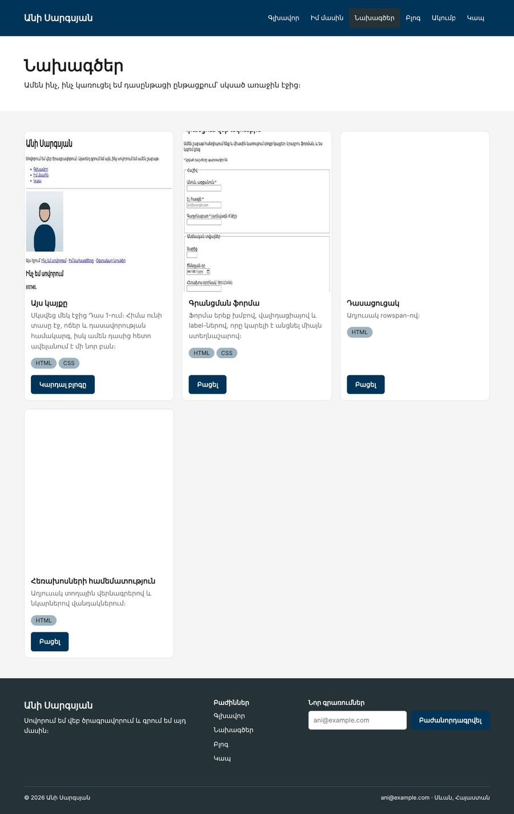

Տնային աշխատանք · HTML Դաս 13 · մինի-նախագիծ
Կառուցում ենք նոր էջ ճիշտ հերթականությամբ․ չափումներ → main.css ութ բաժնով և տոկեններով → HTML։
Օգտագործիր միայն Դաս 01–13-ը։ Մակետը համակարգչի համար է․ ադապտիվությունը Դաս 14-ում է։
Նոր էջ՝ «Նախագծեր», որը կառուցում ես մակետից։ Ամբողջ էջի տեսքը որոշվում է main.css-ի տոկեններով, իսկ HTML-ը գրվում է վերջում։

Սկսիր Դաս 12-ի քո կայքից։ Եթե այն չունես, վերցրու Դաս 12-ի օրինակը։
Բացիր mockup.jpg-ը և համեմատիր content.md-ի աղյուսակի հետ։ Իրական աշխատանքում աղյուսակը դու ես լրացնում Figma-ում կամ DevTools-ով (Դաս 13, բաժին 04)։ Ուշադրություն դարձրու․ բոլոր հեռավորությունները 10-ի բազմապատիկ են, տառաչափերը՝ չորսը։
section { padding: 40px 0; }
.row { padding: 0 calc(var(--wall) - var(--gap)); }
.col { padding: var(--gap); }Փոխիր --wall-ը 100px և --gap-ը 20px։ Բոլոր էջերի պատերը և սյուների միջև բացակները պետք է փոխվեն միանգամից։ Վերադարձրու 60px և 10px։
Ստեղծիր pages/projects.html․ վերնագրի բաժին (bg-surface) և չորս քարտ w-33 սյուներում։ Հաշվիր, թե քանի նոր CSS կանոն ստիպված եղար ավելացնել։ Եթե main.css-ը ճիշտ է, պատասխանը մոտ զրո է։
<article class="wrapper card">
<img>
<div class="card__body">
<h3 class="card__title">Այս կայքը</h3>
<p class="card__text">...</p>
</div>
<div class="card__footer">...</div>
</article>Համեմատիր նախորդ տարբերակի հետ (title-4, text-muted)։ Ո՞րն է ավելի հեշտ կարդալ HTML-ում, և որն է ավելի հեշտ փոխել CSS-ում։
Մենյուում «Դասացուցակ»-ը և «Համեմատություն»-ը փոխարինիր մեկ «Նախագծեր» կետով, իսկ գլխավոր էջի «Բոլոր նախագծերը» հղումը տար projects.html։
main.css-ը ութ բաժնով է--wall-ը և --gap-ը :root-ում են.row-ը և .col-ը օգտագործում են միայն դրանք| Սխալ | Ինչպես ուղղել |
|---|---|
| Պատը 60px չէ, այլ 70px | .row-ի padding-ին գումարվում է .col-ի padding-ը։ Դրա համար՝ calc(var(--wall) - var(--gap)) |
| Էջի համար շատ նոր կանոններ պետք եղան | Ինչ-որ արժեք գրված է ուղիղ էջի համար, ոչ կոմպոնենտում։ Տեղափոխիր այն բաժին 7 |
Սրանք Դաս 13-ի տնային աշխատանքի կետերն են։ «մինի-նախագծում» նշվածները արդեն կատարել ես վերևի քայլերում, մնացածը կատարիր առանձին ֆայլերում կամ նույն թղթապանակում։
:root բլոկ այդ կայքի գույներով։ մինի-նախագծումmain.css-ը՝ ութ բաժնով, ինչպես 05-րդ բաժնում։ մինի-նախագծում--wall-ը և --gap-ը։ Համոզվիր, որ ամեն ինչ հարմարվում է ինքնաբերաբար։ մինի-նախագծում.row-ի Բ տարբերակը (max-width: 1200px; margin: 0 auto)։ Համեմատիր լայն էկրանին։Երբ բաժին 03-ի բոլոր կետերը նշված են, բացիր օրինակը և քո էջը կողք կողքի։ Բացիր երկուսի կոդն էլ խմբագրիչում։ Գտիր մեկ բան, որ դու արել ես այլ կերպ, և մտածիր՝ որն է ավելի հասկանալի և ինչու։ Քո լուծումը կարող է տարբերվել և լինել ճիշտ։